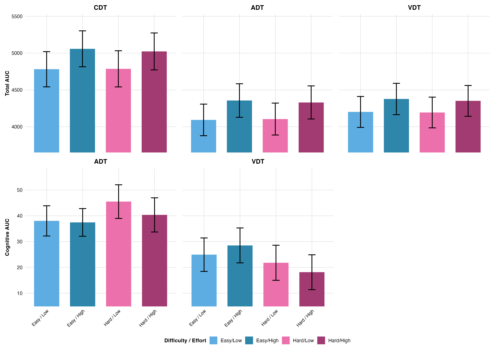
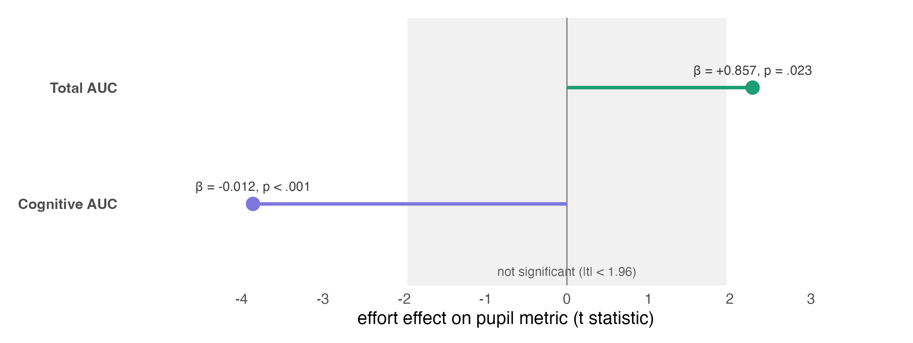
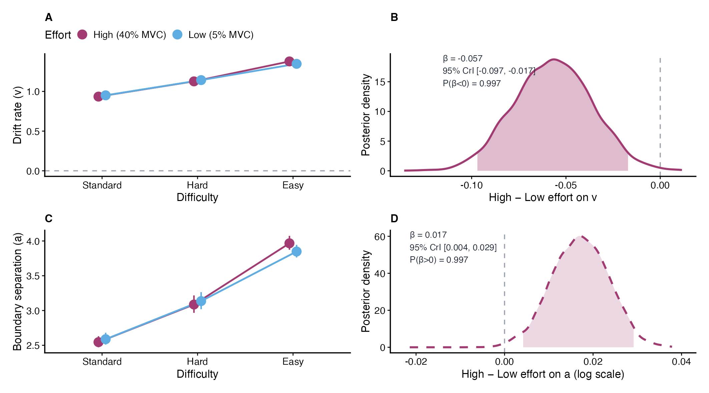
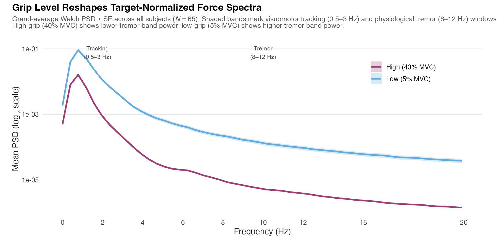
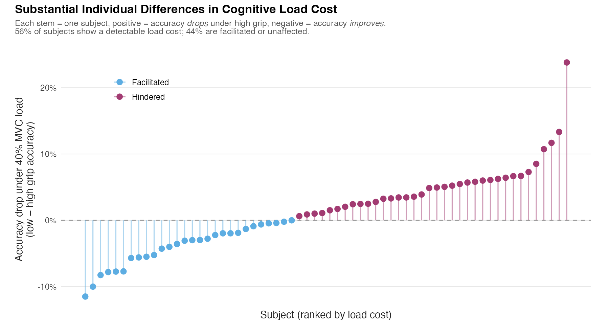

Research
When an older adult grips hard while judging what they just heard or saw, something gives. This work asks what: the sensitivity of perception, the caution behind the response, or the quality of the evidence feeding the decision. Answering it takes more than accuracy and reaction time—it takes tools that can tell those three apart.
The setup
The backbone is a handgrip dual-task: participants hold a steady isometric force while making fine auditory or visual discriminations. Effort becomes an experimental dial on arousal; pupillometry tracks that arousal moment to moment; and modeling separates a change in what you can perceive from a change in how you decide. The paradigm is validated first in younger adults, then examined in older adults—where cognitive capacity is tighter and the physiological price of effort is steeper—through three complementary modeling lenses, plus a fourth that reads the grip signal itself.
Dissertation chapters are not journal articles; titles and status are listed on Publications.
This project was funded by the National Institutes of Health for research on cognitive aging.
The arc
Validate — younger adults
Does the handgrip actually move arousal? Yes. Across three concurrent tasks, pupil-linked arousal tracked the effort manipulation more clearly than summary behavior did—establishing the measurement strategy the older-adult work depends on.


Measure — perception under arousal
In older adults, does moment-to-moment arousal sharpen or blunt perception? Neither, measurably. Effort raised arousal and shifted how much people responded—but it did not tune the sensitivity of perception itself. The key move is that we could show that null was real, not just underpowered.


Model — where the cost lives
If effort costs performance, which part of the decision does it touch? A hierarchical Bayesian diffusion model gives the sharpest answer of the program: effort degrades the quality of evidence accumulation, not the caution or the bias behind the response. The cost is a slower, noisier read of the world—not a change in strategy.


Motor — the grip as a signal
Can the grip itself reveal cognitive strain? The same paradigm, read through the dynamometer trace: sub-second grip tremor tracked perceptual errors trial by trial, and it did so equally under light and heavy force—a general marker of neuromuscular-cognitive strain rather than an effort-specific artifact.




The punchline
Under the limited capacity of aging, physical effort degrades the quality of the evidence feeding a perceptual decision—while leaving the decision policy, the caution and the bias, largely intact. Where the program finds nothing, it says so with bounds, not shrugs.
Why it matters
Most accounts stop at whether effort hurts performance. This program says which component it touches—and, just as usefully, which it spares. That distinction has teeth for systems meant to respond to a user’s state, from wearables to XR: if effort erodes evidence quality rather than caution, a state-aware interface should help by cleaning up the signal—clearer cues, better contrast, more time—rather than by nudging a speed–accuracy tradeoff the user isn’t actually shifting. The work connects psychology, cognitive neuroscience, and human factors, without claiming clinical translation, production deployment, or pupillometry as a diagnostic biomarker.
Program overview: dual-task case study. Methods and computation: Skills.
Adjacent work in XR / HCI
Outside the dissertation, an arXiv preprint (case study) reports hand versus gaze pointing in a web-based, XR-relevant interaction task. Modality-specific failure modes match the intended contrast: gaze—slips and Midas Touch–type errors; hand—misses and spatial targeting failures. Throughput and Fitts-style analyses summarize speed–accuracy tradeoffs.
Adaptive policies must be read narrowly: gaze declutter was the only policy that executed and was evaluable (timeouts down modestly; slip-dominated gaze errors remained dominant). Hand target-width inflation was not evaluable because rendered targets did not update (UI integration bug). Linear ballistic accumulator (LBA) modeling there applies to verification-phase RTs only—see Skills for stack and scope; it does not replace the dissertation diffusion model. This line supports HCI and human-factors breadth; the dissertation remains the primary training identity.
Core questions
- Where does concurrent physical effort change perceptual decision-making in aging—in behavior, in arousal, or in the latent parameters of the decision?
- When effort costs performance, is the mechanism reduced evidence quality, altered caution, shifted bias, or motor interference?
- Can the motor signal itself—continuous grip force—carry trial-level information about cognitive strain, beyond nominal task difficulty?
The content of this website is solely the responsibility of the author and does not necessarily represent the official views of the National Institutes of Health.